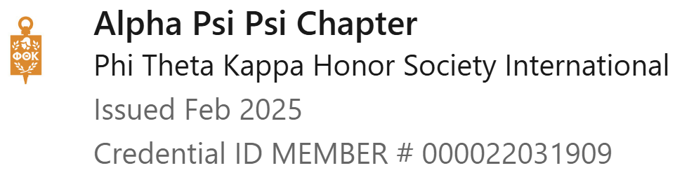

Cybersecurity Association, Inc.
Scan to verify membership
Cybersecurity Association, Inc.
Scan to verify membership
I'm Catherine Jason, an IT and cybersecurity professional who works in security minded environments and enjoys solving problems that help keep systems stable and protected. I support technology operations for a 42-school district, where my day to day includes handling identity changes, reviewing endpoint activity, and helping maintain secure setups across thousands of devices, work that keeps me constantly exposed to live alerts, everyday user behavior, and the patterns that actually matter in security.
That exposure is backed by a technical foundation I've built through hands-on networking, Windows and Linux administration, and the security work I do in my own home lab. Outside of my full time job, I put in extra hours on cyber and SOC projects simply because this field excites me, not because anyone requires it of me. One of those projects is Honey-AI, a research honeypot I built to study how attackers try to manipulate AI chatbots, and much of my downtime goes toward analyzing logs, testing network behavior, and practicing forensic techniques so I can understand how issues start and how they move through a system. I like breaking things down, checking what's normal, and spotting the small details that don't fit, and that curiosity is what keeps me building even after a long day.
Right now that drive shows up in everything I'm juggling at once. I'm holding down a full time job while also running my own independent IT and cybersecurity consulting business on the side, helping small business and individual clients troubleshoot and secure their systems. Alongside that, I'm working through a competitive internship with the Cyber Ready Clinic and finishing the five remaining classes I need for my AAS in Cybersecurity, and I still find time to build my own projects, because this is something I genuinely want to get better at, not just something on a checklist. I hold Security+ and SOCOA I, and I'm currently working toward CompTIA Security AI+ to strengthen my understanding of AI-driven threats and defensive automation. Through the Cyber Ready Clinic internship, I learned the Discover5 and Ready5 assessment methods, took part in live assessments with nonprofit clients, and built my capstone, Click by Click Offboarding. Every class, every certification, every client I help through my own business, and every hour I put into the internship and my own projects adds another piece to how I think about security, and I look forward to all of it.
My goal is to move deeper into security operations and incident response. I've put in the work for it, the late nights after a full shift, the time spent helping clients through my own business, the hours on internship responsibilities, the evenings in my home lab, and the projects I built just because I wanted to understand something better, and I have no plans to slow down. I'm excited to bring that same drive to a team that values strong analytical thinking, steady growth, and someone who shows up ready to keep learning.
Carroll County Public Schools, Westminster, MD · Aug 2026 to Present
Manage user account lifecycle tasks including access updates and group assignments using least privilege practices.
Review endpoint and system activity with Microsoft Defender alerts to support early detection of potential security concerns.
Provide remote support for staff devices using Quick Assist and Microsoft management tools.
Support district technology operations across 42 school sites, including MFA resets, account lockouts, and password recovery through Active Directory and user management systems.
Maintain endpoint security posture through update and compliance workflows in Dell Command Update, Company Portal, and Software Center.
Operate in an environment aligned with NIST SP 800-53 and Maryland DoIT security standards.
Carroll County Public Schools, Westminster, MD · Summer 2026
Imaged and configured over 6,000 student devices and 45 staff systems across 42 school sites for the district one-to-one rollout.
Applied Windows security updates using Dell Command Update, SCCM for staff endpoints, and Intune Company Portal for student devices.
Executed and verified backup and restore checks to support disaster recovery readiness.
Managed secure end-of-life device transitions including wipe workflows, staging, and site-level inventory tracking.
Reimaged more than 1,000 systems with updated Intune policies and district security settings, then completed compliance validation on each device.
Self-employed, Sykesville, MD · 2024 to Present
● Offer on-demand IT and cybersecurity troubleshooting to small business and individual clients on both Windows and macOS systems.
● Use tools like Quick Assist, Remote Desktop, Screen Sharing, AnyDesk, and TeamViewer to resolve account access problems, performance issues, and suspected security incidents remotely.
● Perform manual checks for malware and persistence across Applications, LaunchAgents/LaunchDaemons, login items, and configuration profiles.
● Caught and safely removed a suspicious unauthorized installer before it could run, stopping a potential Trojan infection on a client's machine.
● Inspect browser extensions and settings for signs of redirects or tampering, then run full system malware scans to verify the fix stuck.
● Guided a client by phone through isolating a compromised Windows device and resetting security settings, which cleared up ongoing malicious pop-ups.
● Walk clients through remediation steps and basic endpoint hardening live during troubleshooting sessions.
INTERNSHIP · Sep 2026 to Present (In Progress) · Cyber Ready Clinic, a 501(c)(3) nonprofit founded by Tenable's co-founders, Columbia, MD
● One of a small group selected for a competitive 10-week internship, mentored directly by CRC's Executive Director, a former U.S. Secret Service CISO, and CEO, a former Anomali CISO.
● Training in the Discover5 and Ready5 assessment methodologies, which evaluate business risk across people, operations, finances, and IT alongside cyber capability across identity, endpoints, email, network, and response.
● Took part in live Discover5 and Ready5 assessments with nonprofit clients, identifying capability gaps and presenting fixes to a mentor.
● Built my capstone, Click by Click Offboarding, a free web app that helps small nonprofits shut off access when staff or volunteers leave. See it under Hands-On Projects.
Linux (Ubuntu) GUI & command-line administration
Windows Server
Active Directory & Group Policy
Permissions & access control
Enterprise endpoint management (Company Portal, Software Center)
Windows patch management (Dell Command | Update)
macOS support & troubleshooting
Remote support tooling (Quick Assist, AnyDesk, TeamViewer)
Cisco Catalyst switching (2950, 2960 Plus, 3560G)
Cisco 4331 ISR router configuration
VLANs & routing fundamentals
Network segmentation, firewall rules & DMZ design
Traffic analysis & baselining (Wireshark)
Log analysis for authentication events, endpoint alerts & system activity
SIEM workflows & event correlation (Splunk, certified: Intro to Splunk, Using Fields)
Alert triage, escalation & ticket documentation
Separating false positives from true security events
IOC identification & MITRE ATT&CK mapping
Endpoint defense monitoring (Microsoft Defender)
Incident response lifecycle (entry-level)
Malware and persistence analysis (Applications, LaunchAgents/LaunchDaemons, login items, configuration profiles)
Intrusion detection concepts
SNORT
Signature vs anomaly awareness
Monitoring workflows
Kali Linux (controlled lab environments)
Parrot Security OS (controlled lab environments)
Security tooling platform familiarity
Evidence handling & documentation
Disk imaging & artifact awareness
Chain-of-custody principles
FTK Imager, OSForensics, E3 Forensic Platform, ProDiscover
PowerShell (Active Directory account audits)
Bash (Linux health checks, cron scheduling)
Python (log parsing, regular expressions, brute force detection)
HTML, CSS & JavaScript (interactive security labs)
Python scripting and API development (FastAPI)
Local LLM deployment (Ollama)
Prompt injection detection and risk scoring
Secure cloud deployment (Oracle Cloud, Linux service management)
Business risk assessment across people, operations, finances, and IT (Discover5 methodology)
Cyber capability review across identity, endpoints, email, network, and response (Ready5 methodology)
CompTIA Security+
SOC Operations Analyst I (SOCOA I)
Splunk: Intro to Splunk
Splunk: Using Fields
CompTIA Security AI+ (In Progress)
AAS in Cybersecurity, Carroll Community College (Dec. 2026)
Cybersecurity & Security Pro+ Certificate, Carroll Community College
Academic and lab projects built around applied IT and security skills in practical scenarios.
My capstone for the Cyber Ready Clinic internship. I built a free web app that helps small nonprofits shut off access when staff or volunteers leave.
You answer a few questions about who is leaving and what they had access to, and it builds a checklist with only the steps that apply. If the exit is unplanned, the urgent steps like removing admin rights and blocking email sign in move to the top.
When you're done, it gives you a dated record for audits and cyber insurance. Everything runs in the browser and nothing is saved to a server.
Designed and built a segmented lab network using Cisco Catalyst switches and an ISR router.
Configured VLANs, routing, NAT, and DHCP, and used Wireshark to analyze and baseline traffic behavior.
Validated network operation through packet inspection and controlled traffic testing scenarios.
Administered Linux and Windows Server environments in structured lab settings.
Managed Ubuntu Server using both GUI and command-line tools, covering user administration, permissions, and service management.
Configured Active Directory, Group Policy, and role-based access controls following least-privilege principles.
Conducted structured digital forensics investigations using industry-standard tools.
Performed forensic imaging and analyzed system artifacts, registry data, and file metadata to surface evidence.
Documented all findings in accordance with evidence integrity requirements and chain-of-custody procedures.
Analyzed system and authentication logs to surface suspicious activity and behavioral patterns.
Used SIEM tooling to correlate security events and work through structured alert triage workflows.
Applied incident response concepts to assess alert severity and determine appropriate escalation paths.
Prompt injection detection and risk scoring for AI chatbots, deployed on Oracle Cloud using FastAPI and Ollama.
A Tier 1 SOC shift simulation I built where you work 5 alerts, run Splunk style checks, make the call and write the ticket.
Each alert is mapped to MITRE ATT&CK, and not every alert should be escalated, so the right answer depends on the evidence.
A network lab I built where you place devices, set up VLANs and a DMZ, write firewall rules and trace packets hop by hop.
Includes 5 challenges and an IDS sensor that raises alerts when an attack is blocked or gets through.
See all my labs, scripts and case studies in Catherine’s Labs →
Alpha Psi Psi Chapter
Academic Honor Society

Click to view official certificate
Feel free to reach out through any of the platforms below:
I'm always open to connecting with cybersecurity and IT professionals to exchange ideas, learn from different perspectives, and explore where I might be a good fit.